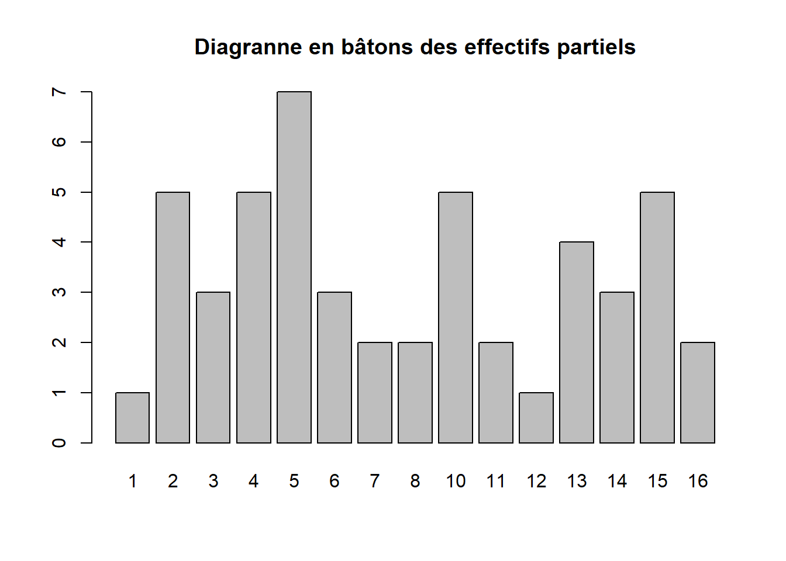

nb_plantes <- c(1, 4, 10, 5, 14, 13, 14, 2, 13, 2, 2, 4, 7, 5, 5, 5, 11, 8, 15, 10, 2, 7, 10, 15, 2, 4, 6, 6, 4, 3, 5, 11, 13, 3, 10, 10, 12, 13, 14, 6, 16, 4, 15, 15, 16, 5, 5, 3, 15, 8)Analyse univariée
Cadre d’étude
La méthode utilisé est la suivante :
On récupère des données brutes, suites à des mesures, sondages, etc.
On présente ensuite nos données dans un tableau statistique
On visualise nos résultat avec des représentations graphiques adaptées
Enfin on réalise un résumé numérique de notre analyse.
Les méthodes à employer pour effectuer cette analyse vont dépendre du type de variable :
Variable quantitative discrète
Variable quantitative continue
Variable qualitative
Variable quantitative discrète
Données brutes
On demande à l’ensemble des étudiants d’une promotion combien ils ont de plantes chez eux. L’effectif total de la promotion est de 50 étudiants.
Les données brutes sont :
1, 4, 10, 5, 14, 13, 14, 2, 13, 2, 2, 4, 7, 5, 5, 5, 11, 8, 15, 10, 2, 7, 10, 15, 2, 4, 6, 6, 4, 3, 5, 11, 13, 3, 10, 10, 12, 13, 14, 6, 16, 4, 15, 15, 16, 5, 5, 3, 15, 8
Tableau Statistiques
On présente ces données dans un tableau statistique, où
- \(x_i\) est une des valeurs que peut prendre la variable étudiée \(X\), où \(X\) est ici le nombre de plantes dans un appartement
- \(n_i\) est le nombre d’occurences de \(x_i\), ou encore l’effectif de \(x_i\)
- \(N_i\) est l’effectif cumulé de \(x_i\), c’est à dire \[N_i = \sum_{k=1}^i n_k\]
- \(n\) est l’effectif total, ici \(n=50\)
- \(f_i\) est la fréquence de \(x_i\) (comprise entre \(0\) et \(1\)) \[f_i = \frac{n_i}{n}\]
- \(F_i\) est la fréquence cumulée de \(x_i\) (comprise entre \(0\) et \(1\)), c’est à dire \[F_i = \frac{N_i}{n}\]
- \(p_i\) est la proportion de \(x_i\), elle correspond simplement à \(f_i\) exprimée en pourcentage, c’est à dire \[p_i = f_i \times 100\]
- \(P_i\) est la proportion cumulée de \(x_i\), elle correspond simplement à \(F_i\) exprimée en pourcentage, c’est à dire \[P_i = F_i \times 100\]
Tableau statistique
| \(x_i\) | \(n_i\) | \(N_i\) | \(f_i\) | \(F_i\) | \(p_i\) | \(P_i\) |
|---|---|---|---|---|---|---|
| 0 | 0 | 0 | 0 | 0 | 0 | 0 |
| 1 | 1 | 1 | 0.02 | 0.02 | 2 | 2 |
| 2 | 5 | 6 | 0.10 | 0.12 | 10 | 12 |
| 3 | 3 | 9 | 0.06 | 0.18 | 6 | 18 |
| 4 | 5 | 14 | 0.10 | 0.28 | 10 | 28 |
| 5 | 7 | 21 | 0.14 | 0.42 | 14 | 42 |
| 6 | 3 | 24 | 0.06 | 0.48 | 6 | 48 |
| 7 | 2 | 26 | 0.04 | 0.52 | 4 | 52 |
| 8 | 2 | 28 | 0.04 | 0.56 | 4 | 56 |
| 9 | 0 | 28 | 0 | 0.56 | 0 | 56 |
| 10 | 5 | 33 | 0.10 | 0.66 | 10 | 66 |
| 11 | 2 | 35 | 0.04 | 0.70 | 4 | 70 |
| 12 | 1 | 36 | 0.02 | 0.72 | 2 | 72 |
| 13 | 4 | 40 | 0.08 | 0.80 | 8 | 80 |
| 14 | 3 | 43 | 0.06 | 0.86 | 6 | 86 |
| 15 | 5 | 48 | 0.10 | 0.96 | 10 | 96 |
| 16 | 2 | 50 | 0.04 | 1.00 | 4 | 100 |
ce que l’on peut également faire avec R de la façon suivante :
- On déclare notre vecteur avec l’ensemble des réponses des étudiant-es
- On calcule ensuite les \(n_i\)
eff_partiel <- table(nb_plantes)
eff_partielnb_plantes
1 2 3 4 5 6 7 8 10 11 12 13 14 15 16
1 5 3 5 7 3 2 2 5 2 1 4 3 5 2 - Puis les \(N_i\)
eff_cumul <- cumsum(eff_partiel)
eff_cumul 1 2 3 4 5 6 7 8 10 11 12 13 14 15 16
1 6 9 14 21 24 26 28 33 35 36 40 43 48 50 - L’effectif total
eff_tot <- sum(eff_partiel)
eff_tot[1] 50- La fréquence \(f_i\) des \(x_i\) par deux méthodes
freq_partiel_methode_1 <- prop.table(eff_partiel)
freq_partiel_methode_1nb_plantes
1 2 3 4 5 6 7 8 10 11 12 13 14 15 16
0.02 0.10 0.06 0.10 0.14 0.06 0.04 0.04 0.10 0.04 0.02 0.08 0.06 0.10 0.04 freq_partiel_methode_2 <- eff_partiel/eff_tot
freq_partiel_methode_2nb_plantes
1 2 3 4 5 6 7 8 10 11 12 13 14 15 16
0.02 0.10 0.06 0.10 0.14 0.06 0.04 0.04 0.10 0.04 0.02 0.08 0.06 0.10 0.04 - La frequence cumulée \(F_i\) correspondante
freq_cumul_methode_1 <- cumsum(freq_partiel_methode_1)
freq_cumul_methode_1 1 2 3 4 5 6 7 8 10 11 12 13 14 15 16
0.02 0.12 0.18 0.28 0.42 0.48 0.52 0.56 0.66 0.70 0.72 0.80 0.86 0.96 1.00 freq_cumul_methode_2 <- cumsum(freq_partiel_methode_2)
freq_cumul_methode_2 1 2 3 4 5 6 7 8 10 11 12 13 14 15 16
0.02 0.12 0.18 0.28 0.42 0.48 0.52 0.56 0.66 0.70 0.72 0.80 0.86 0.96 1.00 - La proportion \(p_i\)
freq_partiel_methode_1_pct <- prop.table(eff_partiel)*100
freq_partiel_methode_1_pctnb_plantes
1 2 3 4 5 6 7 8 10 11 12 13 14 15 16
2 10 6 10 14 6 4 4 10 4 2 8 6 10 4 freq_partiel_methode_2_pct <- (eff_partiel/eff_tot)*100
freq_partiel_methode_2_pctnb_plantes
1 2 3 4 5 6 7 8 10 11 12 13 14 15 16
2 10 6 10 14 6 4 4 10 4 2 8 6 10 4 - La poportion cumulée \(P_i\)
freq_cumul_methode_1_pct <- freq_cumul_methode_1*100
freq_cumul_methode_1_pct 1 2 3 4 5 6 7 8 10 11 12 13 14 15 16
2 12 18 28 42 48 52 56 66 70 72 80 86 96 100 freq_cumul_methode_2_pct <- freq_cumul_methode_2*100
freq_cumul_methode_2_pct 1 2 3 4 5 6 7 8 10 11 12 13 14 15 16
2 12 18 28 42 48 52 56 66 70 72 80 86 96 100 Représentation graphique
- Représentation tige feuille (stem and leaf)
stem(nb_plantes)
The decimal point is at the |
0 | 0
2 | 00000000
4 | 000000000000
6 | 00000
8 | 00
10 | 0000000
12 | 00000
14 | 00000000
16 | 00
ERROR
Problème en sortie pour stem(nb_plantes). Je m’occupe de fixer ce petit problème !
- Diagramme en batons
barplot(eff_partiel,main = "Diagranne en bâtons des effectifs partiels")
barplot(freq_partiel_methode_1,main = "Diagranne en bâtons des fréquence partiels")- Diagramme cumulatif
Le diagramme cumulatif peut être tracé pour \(N_i\) et \(F_i\). Lorsqu’il est tracé à l’aide des fréquences cumulés \(F_i\), alors on dit qu’il représente la fonction de répartition.
plot(eff_cumul, type="s", main="Diagramme cummulatif en effectif", xlab="x (nbre de plantes)", ylab="Effectif cumulé")plot(freq_cumul_methode_1, type="s", main="Diagramme cummulatif en frequence", xlab="x (nbre de plantes)", ylab="F(x) (fréquence cumulée)")Cette dernière courbe correspond à la courbe de la fonction de répartition \(F(x)\) que nous allons définir dans la suite.
Fonction de répartition
On appelle fonction de répartition d’une variable statistique quantitative toute application définie par : \[ F(x) = \left| \begin{array}{cl} 0 &\mbox{ si } \ x < x_i \\ F_i &\mbox{ si } \ x_i \leq x < x_{i+1} \\ 1 &\mbox{ si } \ x \geq x_r \end{array} \right.\]
où \(r\) désigne l’odre de la dernière valeur (modalité).
La fonction de répartition \(F\) est une fonction en escalier.
Quantiles
Un objet utile pour la suite.
Avertissement
Pour déterminer un quantile, il faut toujours travailler avec une serie statistique ordonnée.
De façon empirique, on peut dire que le quantile d’ordre \(\alpha\), noté \(x_\alpha\), est une valeur qui partage la serie statistique en deux sous ensemble qui contiennent respectivement un nombre d’observations égale à \(n\alpha\) et \(n\left(1-\alpha\right)\), où \(n\) est l’effectif total de la serie statistique et \(\alpha\) une proportion comprise entre \(0\) et \(1\).
Quantile d’ordre \(\alpha\)
Soit la série statistique brute \[\{x_i\}_{1 \leq i \leq n}\] donnant la lieu à la série statistique ordonnée \[\{x_{(i)}\}_{1 \leq i \leq n}.\] On considère la proportion \(\alpha\) où \(0 \leq \alpha \leq 1\).
Si \(n\alpha\) n’est pas un entier, alors le quantile d’ordre \(\alpha\), noté \(x_\alpha\) est égale à \(x_{([n\alpha])}\).
Si \(n\alpha\) est un entier, alors
- 1ère convention (lorsque l’effectif est impaire) : le quantile d’ordre \(\alpha\), noté \(x_\alpha\), est égale à \[x_{(n\alpha)}\]
- 2ème convention (lorsque l’effectif est paire) : le quantile d’ordre \(\alpha\), noté \(x_\alpha\), est égale à \[\frac{x_{(n\alpha)}+x_{(n\alpha+1)}}{2}\]
Les valeurs centrales
Il existe trois valeurs centrales :
Le mode
La médiane
La moyenne
Après avoir appris à les calculer on étudiera leurs propriétés puis on verra comment la comparaison des trois valeurs centrales permet de rendre compte de la forme d’une distribution et quelles sont les valeurs centrales qui presentent les propriétés les plus intéressantes.
Le mode
Le mode d’une série statistique est la valeur avec l’effectif le plus élévé, ou la fréquence la plus élevée.
La médiane
Le quantile d’ordre \(\displaystyle\frac12\) correspond à la mediane.
Dans notre exemple, \(n=50\), donc \(n\) est paire, d’où \[x_{(n\alpha)} = x_{\frac{1}{2}} = \frac{x_{(25)}+x_{(26)}}{2} = 7\]
La mediane est insensible aux variations des valeurs extrèmes.
tri_nb_plantes <- sort(nb_plantes)
tri_nb_plantes [1] 1 2 2 2 2 2 3 3 3 4 4 4 4 4 5 5 5 5 5 5 5 6 6 6 7
[26] 7 8 8 10 10 10 10 10 11 11 12 13 13 13 13 14 14 14 15 15 15 15 15 16 16(tri_nb_plantes[25]+tri_nb_plantes[26])/2[1] 7median(nb_plantes)[1] 7La moyenne arithmétique
La moyenne arithmétique est le paramètre de tendance centrale le plus utilisé. La moyenne est très sensible aux valeurs extrèmes, c’est un paramètre peu robuste. On le note \(\overline{x}\) et est définie par \[\overline{x} = \sum_{i=1}^n f_i x_i = f_1 x_1 + f_2 x_2 + f_3 x_3 + \dots + f_4 x_4\]
Avec R on a
mean(nb_plantes)[1] 8.16Comparaison des valeurs centrales
Distributions bimodales ou multimodales significatives. La distribution ne peut pas être résumée par une seule valeur. Elle se compose de deux groupes très différenciés. \(\Rightarrow\) le meilleur résumé est alors donné par les modes principaux et secondaires de la distribution.
Distribution unimodales symétriques Lorsque la distribution est unimodale et symétrique, on va trouver à peu près moyenne \(=\) médiane \(=\) mode . \(\Rightarrow\) le meilleur résumé est alors donné par la moyenne car elle tient compte de toutes les observations et elle possède des propriétés statistiques intéressantes.
Distributions unimodales dissymétriques: Deux cas peuvent se présenter : - mode < médiane < moyenne : la distribution est dissymétrique à gauche, c’est à dire qu’ily a concentration pour les valeurs faibles et dispersion pour les valeurs fortes. C’est le cas le plus fréquent. - moyenne < médiane <mode : la distribution est dissymétrique à droite, c’est à dire qu’il y a concentration pourles valeurs élevées et dispersion pour les valeurs faibles. Ce cas est plus rare que le précédent. on pourra néanmoins utiliser la moyenne.
Propriétés de Yule
Le statisticien Yule (XIXème siècle) a définis six propriétés souhaitables pour les valeurs centrales.
Etre définie de façon objective partition en classe adoptée.
Dépendre de toutes les observations
Avoir une signification concrète
Etre simple à calculer
Etre peu sensible aux fluctuations d’échantillonage
Se prêter au calcul algébrique
Le tableau ci-dessous permet de résumer les avantages et inconvénients des trois valeurs centrales.
| Propriétés de Yule | Mode | Médiane | Moyenne |
|---|---|---|---|
| Définie de façon objective | - | + | + |
| Dépend de toutes les observations | - | - | + |
| Signification concrète | + | + | - |
| Simple à calculer | + | + | + |
| Peu sensible aux fluctuations d’echantillonage | - | + | - |
| Se prête au calcul algébrique | - | - | + |
Les paramètres de dispersion
Une série numérique peut être résumée par deux paramètres statistiques :
le centre d’une distribution des valeurs, représentant leur tendance d’ensemble
La dispersion des valeurs, représentant leur variabilité
Les quartiles
Le quantile d’ordre \(\frac14\) correspond au premier quartile \(Q_1\).
Le quantile d’ordre \(\frac34\) correspond au troisième quartile \(Q_3\).
Les déciles
blabla
Les centiles
blablabla
Etendue ou intervalle de variation \[\left|x_{max} - x_{min}\right|\] dependance des valeurs extrèmes, donc instable
intervalle interquartile \[\left|Q_3 - Q_1\right|\]
Variance \[\sigma^2 = \frac{1}{n} \sum_{i=1}^n \left( x_i - \overline{x} \right)^2\]
Ecart type : \(\sigma\)
Résumé numérique
Boxplot
boxplot(nb_plantes)Variable quantitative continue
Donnée brutes
blabla
Tableaux statistiques
blabla
Représentation graphique
blabla
Fonction de répartition
blabla
Les valeurs centrales
blabla
Les paramètres de dispersion
blabla
Résumé numérique
blabla